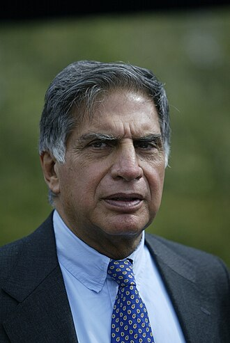

the creator of tata group
a photograph of ratan tata
Ratanji Tata was born in Bombay in British India as the son of the noted Parsi merchant Jamsetji Tata. Ratan Tata was educated at St. Xavier's College in Bombay and afterwards entered his father's firm. On the death of the elder Tata in 1904, Ratan Tata and his brother Dorabji Tata inherited a very large fortune, much of which they devoted to philanthropic works of a practical nature and to the establishment of various industrial enterprises for developing the resources of India.
One of the most influential people in the world.
-- Time Magazine tata group
Learn more about TATA and his work: